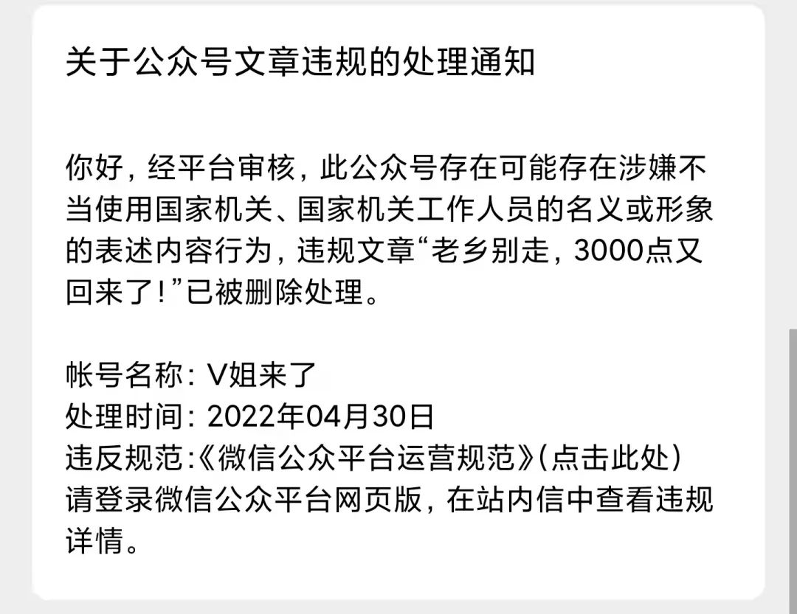
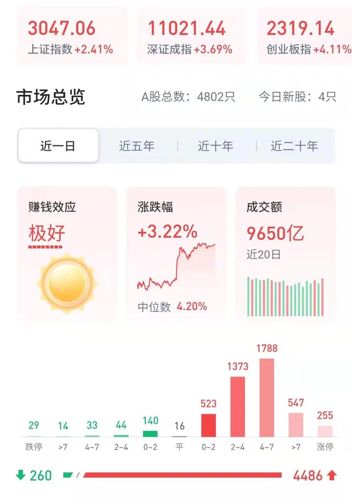
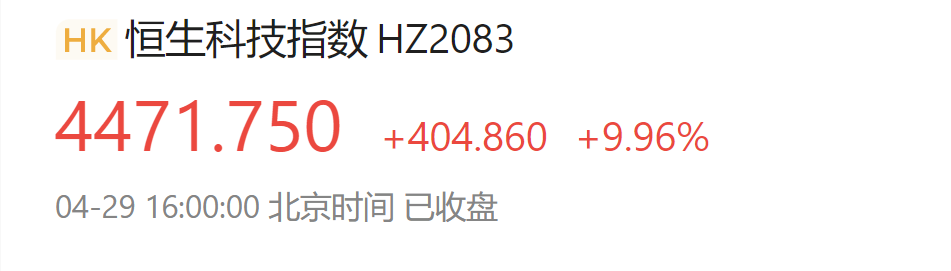
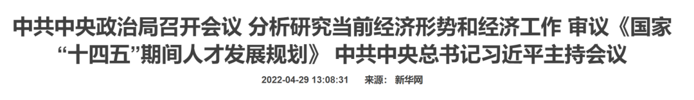
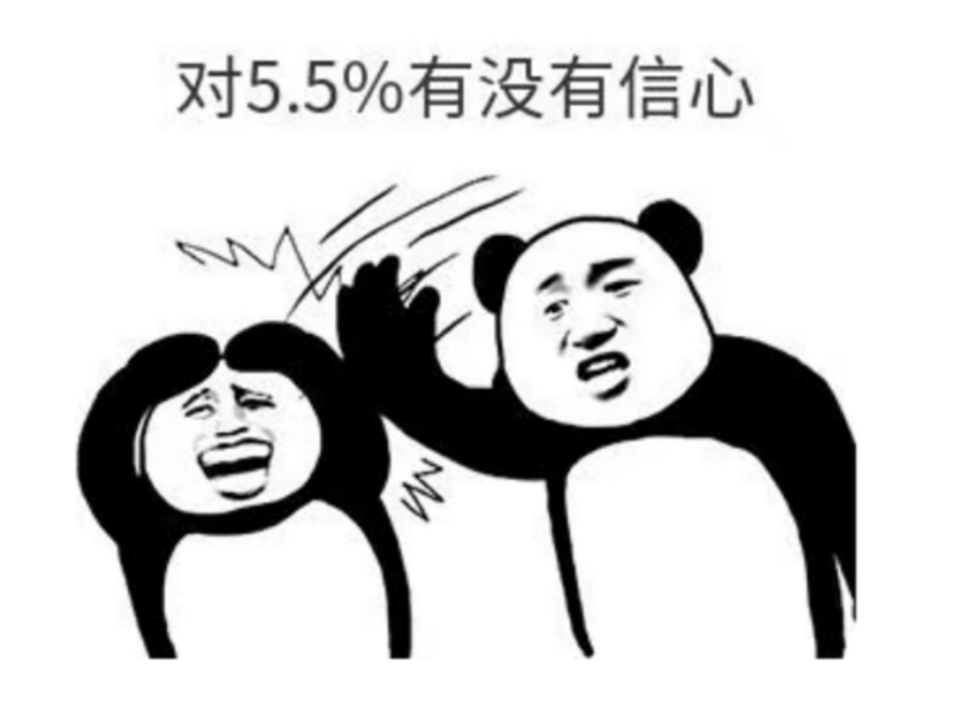
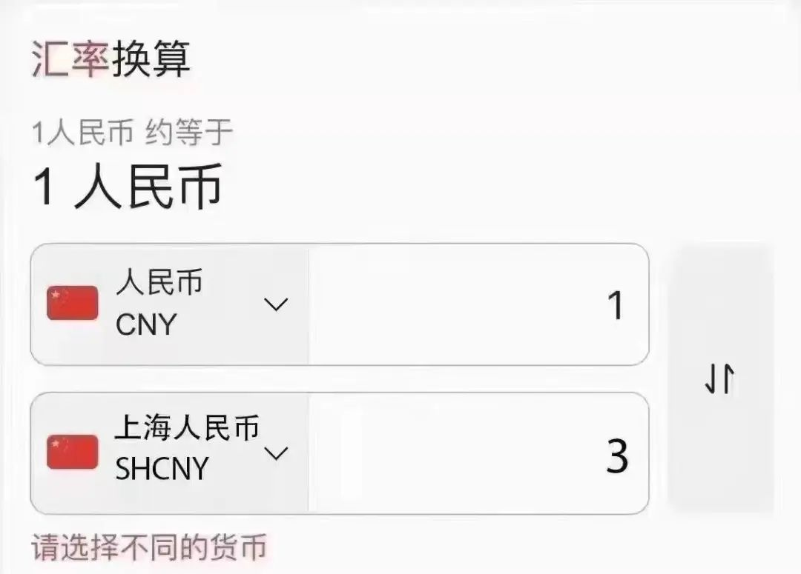
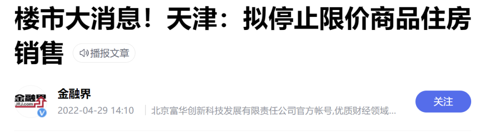
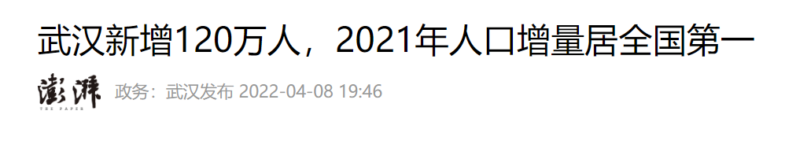

老乡别走，3000点又回来了！
原创 V姐万事屋 V姐来了 2022-04-30 14:09
原文链接(长) 原文链接(短)
Hi, 我是V姐。
昨天文章是我不小心，涉及重要领导人不能随便开玩笑。不过我个人认为对重大政策的预判还是比较重要的，所以今天修改后，重新推送一下给没看过的朋友。

* * *
* * *
老乡们，今天市场给大家发红包了，三大指数大涨，上证3000点收复。

恒生科技午后直线拉升近10%。

原因很多朋友可能已经知道了，今天中央政治局会议召开，高层主持并发布重要指示。

我们注意本场是经济专场。政治局会议每月都有，但是 **关于经济的只有4场，分别是4月，7月，10月和12月底。**
这个会议对于我们理解后面半年到1年的经济政策，并且调整投资策略非常重要。去年7月底政治局会议结束后，尽管当时对楼市还是打压态势，但是我们已经预判趋势要转向了。 [政治局会议写着【放水】两个字 ▏《近V者富》#Day053](http://mp.weixin.qq.com/s?__biz=MzI1NjQ2ODIzMg==&mid=2247484381&idx=1&sn=8056e101eb95ae5ae10e0cbe1cc06191&chksm=ea2777badd50feaca9f5a0dc6df586c92ed8acb1ee88574ccce74eb03e899944455b3a345ff0&scene=21#wechat_redirect)
而且今天有个不同以往的地方，过去官方对政治局会议的通稿一般在下午4点以后出来，为的就是避免影响当天股市的波动，所以会在港股4点收盘后发布。
**今天下午1点之前，新华社罕见提前发布了会议通稿**。于是大A和港股原地飞天~

你看，这不五一了嘛，提早让大家回一大波血，也能促进消费不是吗？不得不说用心良苦。
还请全国同胞替上海人民多花一点，最近沪币贬值太凶，我们心有余而力不足。

那么这会议到底说了啥呢？
我看了全文，帮大家梳理了一下：
首先讲 **现实**： _新冠肺炎_ _疫情和乌克兰危机导致风险挑战增多，我国经济发展环境的复杂性、严峻性、不确定性上升，_ **_稳增长、稳就业、稳物价_** _面临新的挑战。_
接着讲 **目标** _：_ **_疫情要防住、经济要稳住、发展要安全_** _，这是党中央的明确要求。_
最后讲 **措施：**
1、 **财政和货币政策要发力**，扩需求，促消费，帮扶中小企业，扩大就业。
2、对上游能源企业要 **保供稳价**，控制下游通胀。
3、要坚持房住不炒，但是同时 **支持各地从当地实际出发完善房地产政策，支持刚性和改善性住房需求，优化商品房预售资金监管**，促进房地产市场平稳健康发展。
4、对于股市， **稳步推进注册制，引入长期资金，确保平稳发展。**
5、政策 **以我为主，坚持办好自己的事**，同时要坚持扩大高水平对外开放，稳住外贸外资基本盘。
6、加快建设世界重要人才中心和创新高地。 **北京、上海、粤港澳大湾区** 要坚持高标准，努力打造成创新人才高地示范区。
官方会议措辞严谨，内涵丰富，大家都可以有不同的理解。
**我分享一下个人对于本次会议的解读：**
1、降准降息，尤其降息，虽然因为中美货币的逆周期，空间有限，也面临很大压力，但是我们咬定5.5目标不放松，所以为了实现目标，工具都有可能上。
2、动态清零政策今年不会变。
3、刺激消费要不遗余力，主要是 **住房、汽车和家电**，这3个行业的龙头可以关注一下。
4、各地楼市已经开始 **定向降息，放开限购，如有必要，会启动棚改**。本次不再提保障房，各地保障房，限价房会加快下架，刚需的朋友可以看起来。
天津已经开始了，10月1号会停止限价房销售，倒逼刚需尽快出手。

5、对上游进口能源和大宗商品的企业，会进行保供稳价。预计会降低关税，甚至0关税，增加补贴，来降低企业成本，减少向下游传导的通胀。如果是 **投资能源类资产的，注意政策风险**，这是高度政策相关的行业，ZF可以进行深度控价。
6、股市不敢说现在一定是底，但是下半年会比上半年好。所有悲观预期叠加的最坏时候已经过去了。最高层的喊话，喊的是信心，你说用尽一切手段，咬定目标不放松，底下人就懂了，人心不散，队伍就好带。
7、北京、上海、粤港澳大湾区会加速人才引进，打造人才高地，发力高科技。 **这三个地方的房价会有坚实支撑，有需要买房的朋友不要太犹豫了。**
这里我多说两句，关于上海，很多朋友会有疑惑，经过这波疫情，会不会导致人才大量流失。
我们先来看一个数字：

20年疫情，当时的某某日记，网上的愁云惨雾，痛骂湖北F4。对于武汉除了心痛，还有对ZF的不满和愤怒，大家还记得吗？
结果就是21年，武汉新增人口120万，全国第一。
20年下半年-21年，多少欧美留学生，海外华人抢高价机票要哭着喊着回国，首选上海，现在觉得某地完蛋了的，是不是同一拨人？
讲这个，一个是说人群的特点，就是 **健忘**。
还有一个是要说，人群选择的考量，更多是 **眼前的趋利避害。**
上海的经济地位没有变，入海口位置没有变，产业会得到更多资源，更多高薪岗位依然会聚集在这里，对于普通人来说，这就是不可替代的吸引力。
而且我猜测，这波疫情之后，上海会加快放开落户政策，更加积极的引入人才，只要它愿意把落户门槛降低，一年进来300万人没有问题。
之前上海是不太愿意这么做的，一方面对长三角兄弟省市冲击过大，一方面房价太不可控。现在这波疫情确实经济受损巨大，今年自己没结余，年初承诺的转移支付一分不少，所以后面的自救政策力度不会小，我们拭目以待。
至于说有钱人会跑的，这个数量级，对于上海的基本盘没有太大影响。
首先上海每一年本来就有不少人会移民。再者有钱人一般是生意人，生意人不像刷盘子的，想跑就跑。生意人的基本盘，一年赚8位数甚至9位数的，是随意可以挪走的吗？
这么说的朋友，肯定没有开过公司。这个迁徙成本高到你没法想象，甚至会直接让生意崩盘。
现在的局势下，中产移民更加不是优选，真的聪明人不会这么做，本篇不展开讲。
所以我们判断趋势，要理性一点，看得更长远一点，不要被情绪冲昏了头脑，这样才能做出对自身有利的选择。
明天是五一了，祝大家假期愉快！
_友情提醒，公众号精选留言现在可以显示地址，请勿地域攻击，友好发言。_
_如果实在想口吐莲花，建议您改成：您好，吃了吗？今天核酸做了吗？抗原小队长吧？好嘞，我这还有一包泡面，你先拿去，嗨，客气啥~_